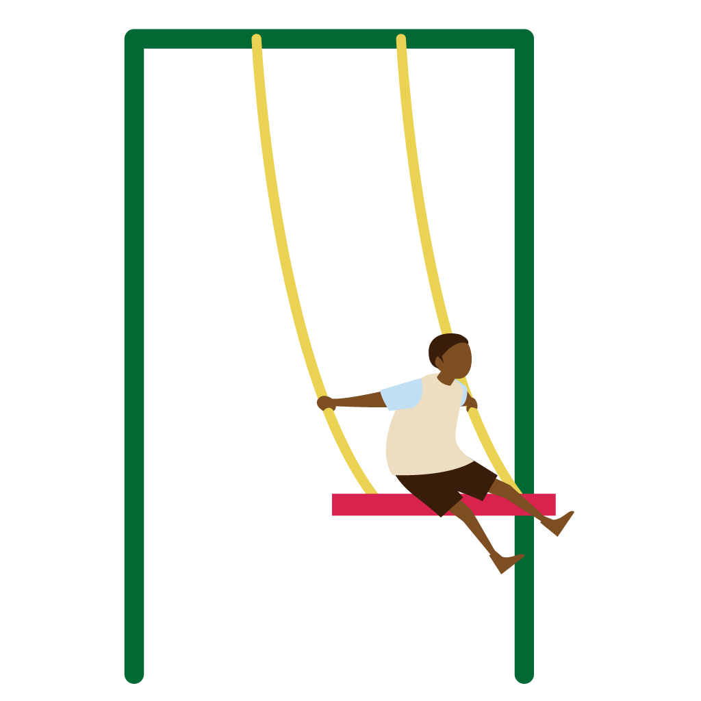
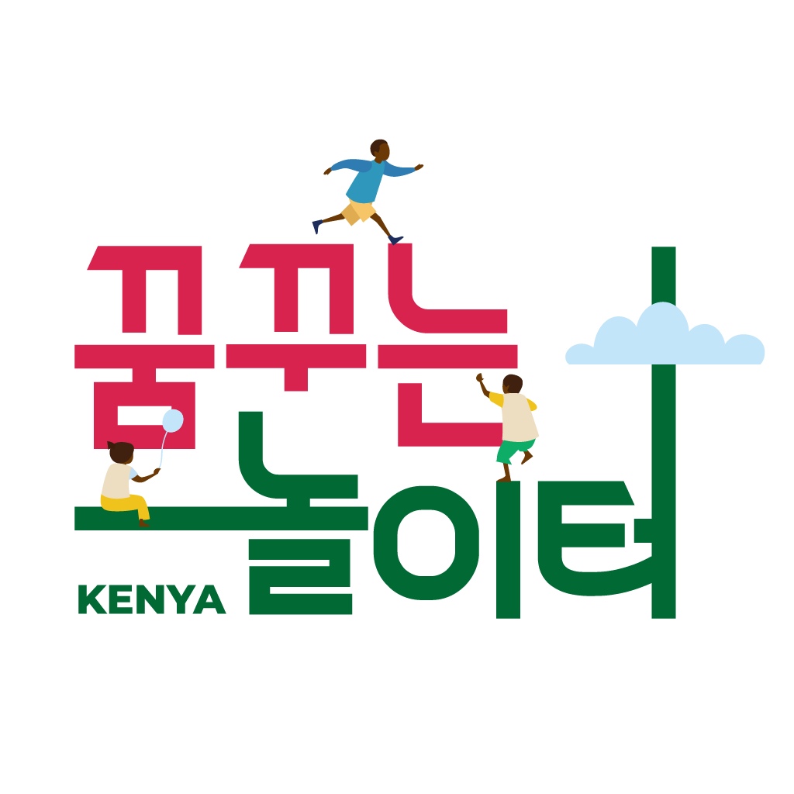

2023 walking for miracle
케냐 꿈꾸는 놀이터를 위한 워킹포 미라클

케냐 아이들이 안전하게 뛰어놀 수 있는
놀이터를 위해 함께 걷고 기도합니다.

What is “Walking for Miracle”?
Walking for Miracle 은 ‘코로나 19’로
직접 선교지를 방문하지 못하는 상황에서
시작된 걷기 무브먼트입니다.
교회 공동체 식구들이 다함께 걷고, 때론
각자 삶의 자리에서 걸으면서 기도하고,
걸음 수만큼 재정을 나눠서 선교지에
보내주는 것으로 선교에 동참하게 됩니다.
 어떻게 재정을 모으나요?
이번 워킹포 미라클은
2023.10.22 주일 전교인 야유회 때
자신이 걸은 걸음수만큼
헌금해주시면 됩니다.
우리 중에서도
헌금을 하지 않고
걷고 기도만 해주셔도 좋습니다.
부족한 금액은
빛의교회가 준비해서
보내도록 하겠습니다.
[헌금하는 방법]
입금계좌 : 신한은행 140-010-317409
빛의교회 (선교)
입금자명 : 홍길동w4m